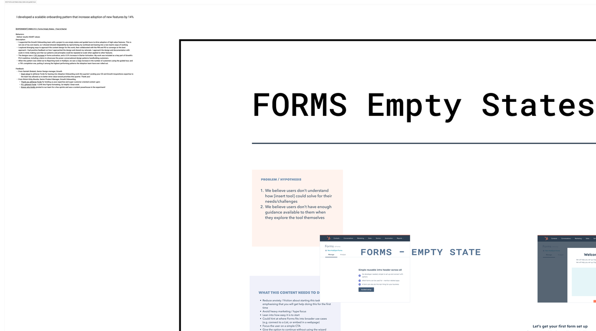

New users were leaving without activating key tools.
In 2023, the Growth Onboarding team was working to drive adoption of high-value HubSpot features using empty states and guided tours. I joined this project as a content design resource, adapting my focus from my core teams to lean into a new team's ways of working.
The core problem: when Free and Starter users finished the linear post-signup flow and started exploring tools independently, they had no guidance. Empty states — the screens you see when a tool has no data yet — were a missed opportunity. Most were generic or blank. A well-designed empty state could explain what the tool does and give users a reason to take a first step.
Content design for empty states and guided tours.
I explored diverging approaches to the content design for this work, then collaborated with the PM and PD to converge on the best approach. I designed the empty state content for the Forms tool — explaining what forms can do, surfacing the right action, and giving users confidence to get started. I also worked on the guided tour experience, with a focus on conversational design patterns that walked users through setup step by step.
I approached the design and documentation with scale in mind from the start: the patterns needed to be repeatable so other teams could apply them to other tools without a content designer in the loop each time.

The Forms empty states and guided tour design — empty state copy variants, guided tour steps, and the onboarding pattern documentation intended for scaling across HubSpot's tools.
"Giant shout to Kieran Forde for leaning into Adoption Onboarding work this quarter! Lending your CD and Growth Acquisitions expertise to the team has allowed us to better drive value toward priorities this quarter."
Rolled out to Reporting — and performed even better.
The work was included as a key part of Growth's PLG roadshow, including a demo showcasing conversational design patterns for customer onboarding. When the pattern was rolled out to Reporting tools, it delivered the highest performance the Adoption team had recorded for this type of work.
14% forms activation increase. 78% guided tour completion in Reporting.
Experiment results:
- 14% increase in forms activation (Content Activation / Publish Form)
- 5.5% increase in Starter Activation
When scaled to Reporting: 22pp increase in the number of customers using the guided tour, and 78% completion — among the highest-performing patterns the Adoption team had ever seen.